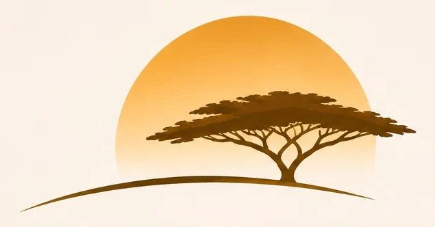
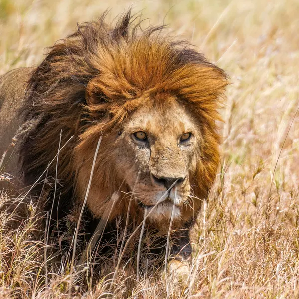
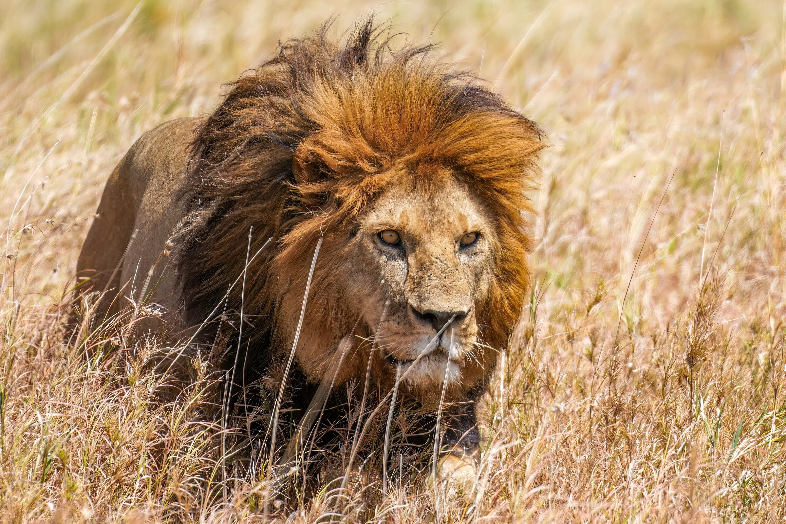
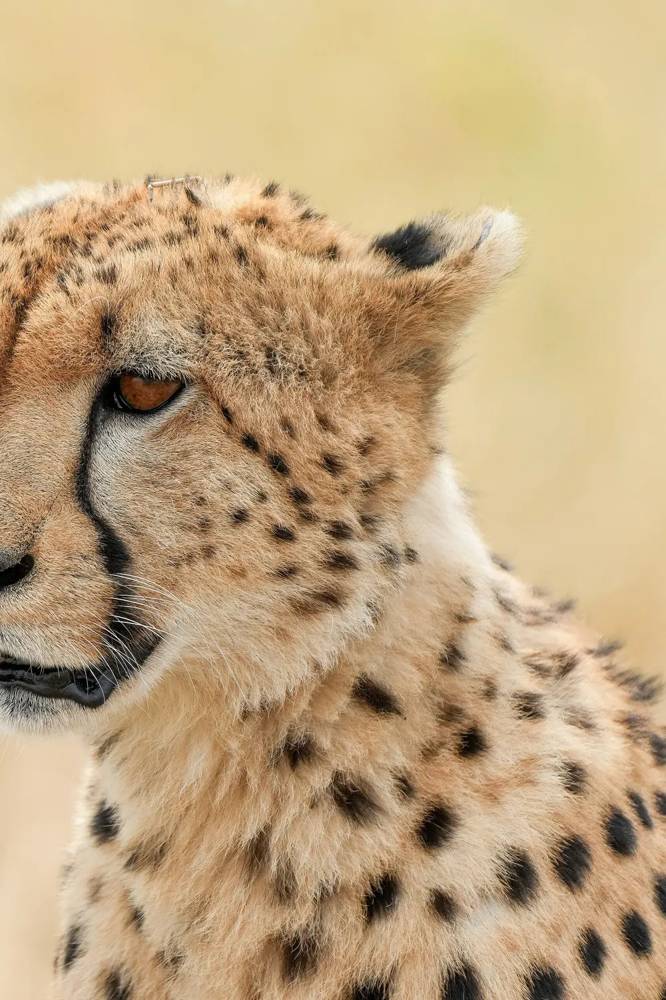
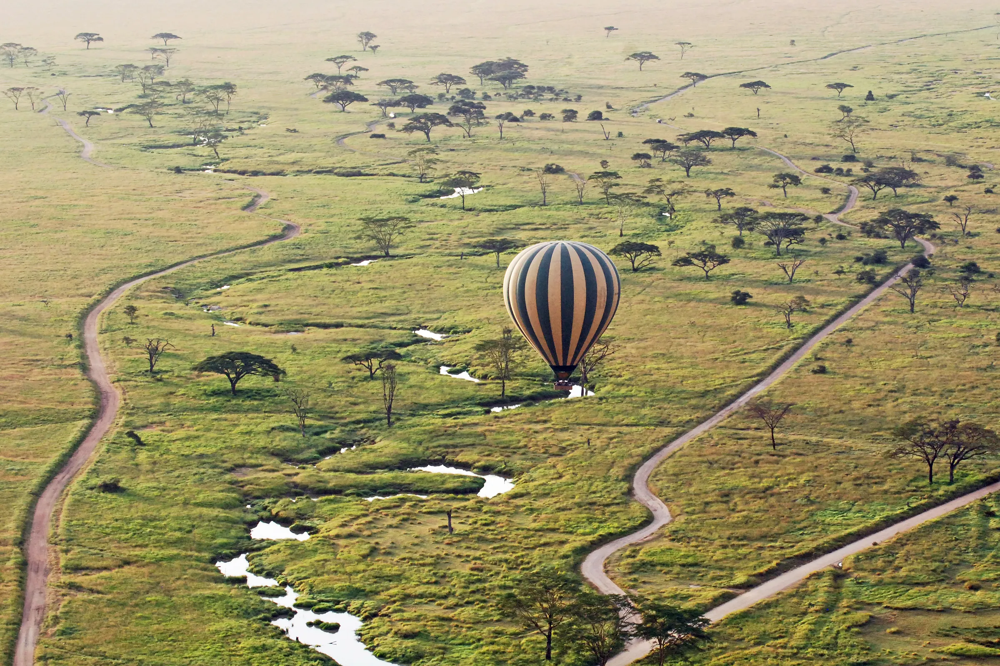
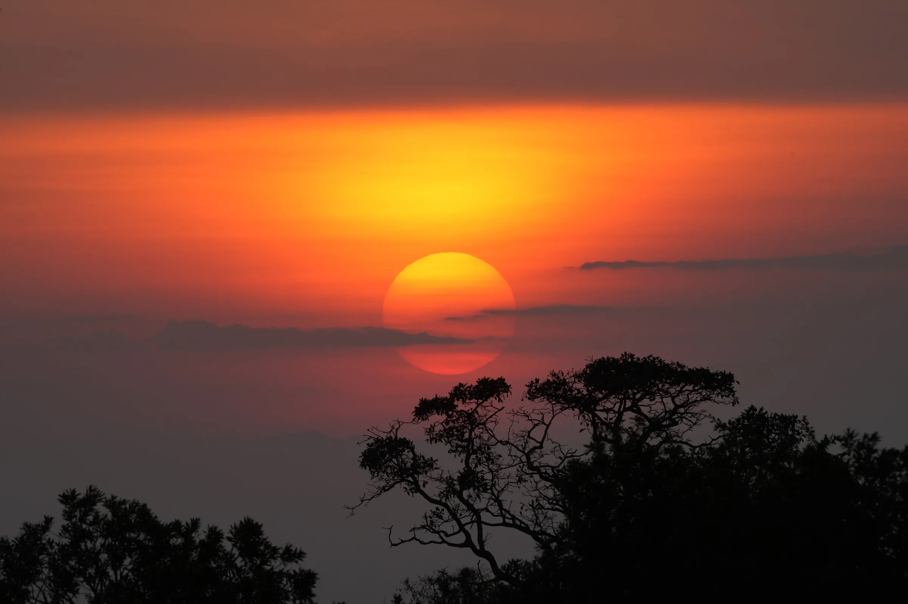
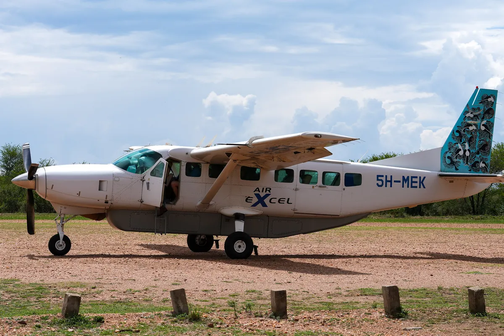

The Great Migration
Two mobile camps that follow the herds, a full day on the floor of the Ngorongoro crater, and a dawn balloon over the river crossings. Flying safari between camps.
From SAR 29,500
From Riyadh to the Serengeti in a day.
Samur is the Arabic name of this tree. We take Saudi travellers to the plains it stands on, and bring them home with the sea at the end.
One stop at Kilimanjaro, forty minutes in a light aircraft, and your guide is waiting at the airstrip.
Arabic-speaking, licensed, with a private open safari vehicle and cold water in the box.
This is the day, as you will see it.
Follow the day
Riyadh to the Serengeti
in a day
Serengeti
in a day
Samur is a Saudi company for Saudi travellers who want the real Africa without the hard edges. We fly you from Riyadh or Jeddah to northern Tanzania, hand you to Arabic-speaking guides, and keep the days simple: dawn game drives, long lunches in the shade, halal kitchens, prayer times kept, and the sea at the end.

At Kilimanjaro you walk from the airliner to a Cessna Caravan. Twelve seats, one pilot, a window each. The plains unroll under the wing, you can count the wildebeest, and the airstrip appears as a red line in the grass. No terminal, no queue: your car is parked beside it.

You stop. He does not. A male lion uses the track because it is easier than the grass, and passes a few metres from the door without looking up. The engine is off, the guide's voice is low, and nobody reaches for a phone until he is gone.

Open vehicles, three tiers of seats and no windows to wind down. When the herds cross the track you switch the engine off and wait, with the dust and the sound of hooves all around you. It is the best twenty minutes of the day.

Tarangire has more elephants than anywhere else in the north, and the families use the same tracks you do. The guide stops well back, the matriarch decides, and the calves cross in the middle. Nobody hurries.
Lion, leopard, cheetah, giraffe, zebra, elephant. In the Serengeti, Ngorongoro and Tarangire you meet them all in a week, often before breakfast. Never fed, never called, never touched.





A tented camp is not camping. The walls are canvas, but the floor is hardwood, the bed is a real bed, and the bathroom has a hot shower. Breakfast is on the deck, the zebras are on the grass in front of it, and the kitchen cooks halal from the first meal to the last.
We built Samur because the safari we wanted did not exist for travellers from the Gulf: guides who speak our language, food we can eat, days shaped around prayer, and camps that understand a family of eight. Everything else, the lions, the dust, the silence at night, Africa supplies.
| Flights | One stop from Riyadh or Jeddah to Kilimanjaro |
|---|---|
| Bush planes | Cessna Caravan, forty minutes between camps |
| Guides | Arabic-speaking, licensed, ours |
| Kitchen | Halal throughout, Arabic breakfast on request |
| Prayer | Times kept, qibla marked in every room |
| Visas | Tanzania e-visa arranged by us |
| Best months | June to October · January to March |


Two tiers on every journey. Luxury means a lodge on the crater rim with a pool that looks six hundred metres down. Beyond means a private camp, a private chef and a private aircraft. Both keep prayer times, serve halal, and have a family suite where the children sleep two doors from you.

An hour in the air at first light, drifting over herds that do not look up, and a breakfast laid out wherever the basket lands. Included in two of the five journeys, and worth every early alarm.

Fajr, coffee, warm blankets in the car. The first hour of light is when the cats move. The evening belongs to the elephants, Maghrib is prayed back at camp, and the generator goes quiet at ten so that the only sound left is the plain.

Ninety minutes over Kilimanjaro and you are on the coast. A Swahili town of coral stone and Omani doors, where Arabic is still read on the lintels and the mosques are older than most countries. The coffee is spiced, the market smells of cloves, and you will feel oddly at home.

Three or four nights at the end of every journey. A villa with its own pool, a dhow at sunset, a beach where the tide goes out for a kilometre, and a sea warm enough for the children at seven in the morning.
Each one comes with flights, camps, guide, transfers and the e-visa, priced in riyals per person. Change anything and we rebuild the price the same day.
Two mobile camps that follow the herds, a full day on the floor of the Ngorongoro crater, and a dawn balloon over the river crossings. Flying safari between camps.
From SAR 29,500
Five nights of game drives in Tarangire and the central Serengeti, then a short flight to the coast for four nights on Nungwi beach. The journey most families book first.
From SAR 34,900
Bush planes carry you between three camps in the southern and northern Serengeti, so every morning and afternoon is spent with the animals, not on the road. Balloon included.
From SAR 38,500
Short drives, family suites with pools, a guide who turns every drive into a story, and three days of sea at the end. Children from six; one family of up to eight.
From SAR 31,500 per adult · children from SAR 18,900
One private camp, one private aircraft, one private island villa. A chef who cooks what you grew up with, and nobody else on the horizon. Up to ten guests.
From SAR 68,000
Tell us when you can travel and who is coming. We reply within a day, in Arabic or English, with a first itinerary and price.